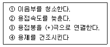

침투비파괴검사산업기사(구) (2004-03-07 기출문제)
1과목: 침투탐상시험원리
1. 후유화성 형광침투액 및 습식 현상제를 사용하여 반거치식으로 침투탐상할 경우 자외선 조사등의 위치로 적당한 곳은?
- 침투액 적용 단계
- 유화제 적용 단계
- 세척단계
- 현상제 적용 단게
(정답률: 알수없음)

2. 침투탐상시험에서 백색 미세분말의 현상제를 물에 분산시켜 사용하는 방법은?
- 건식현상법
- 속건식현상법
- 습식현상법
- 무현상
(정답률: 알수없음)
3. 수성유화제(Hydrophilic Emulsifier)를 사용하고 습식현상제를 적용하는 경우의 검사절차는?
- 전처리 → 침투처리 → 유화처리 → 세척처리 → 건조처리 → 현상처리 → 관찰 → 후처리
- 전처리 → 침투처리 → 유화처리 → 세척처리 → 현상처리 → 건조처리 → 관찰 → 후처리
- 전처리 → 침투처리 → 1차 세척처리 → 유화처리 → 2차 세척 처리 → 건조처리 → 현상처리 → 관찰 → 후처리
- 전처리 → 침투처리→ 1차 세척처리 → 유화처리 → 2차 세척 처리 → 현상처리 → 건조처리 → 관찰→ 후처리
(정답률: 알수없음)
4. 수세성 침투탐상검사를 할 때의 주의점이 아닌 것은?
- 세척시의 물의 압력은 별도의 규정이 없고, 완전히 세척만 되면 된다.
- 지시된 침투시간이 넘지 않는 것을 확인한다.
- 검사부분의 과도한 세척을 피한다.
- 초과 침투액이 씻어졌는가를 알기 위하여 자외선등을 사용하는 경우도 있다.
(정답률: 알수없음)
5. 다음 중 폭이 넓고 얕은 불연속을 검출하는데 가장 좋은 침투액은?
- 후유화성 형광침투액
- 용제제거성 염색침투액
- 수세성 형광침투액
- 수세성 염색침투액
(정답률: 알수없음)
6. 다음 중 침투탐상시험법이 아닌 것은?
- 수세성 형광침투탐상법
- 후유화성 형광침투탐상법
- 불용성 염색침투탐상법
- 용제제거성 형광침투탐상법
(정답률: 알수없음)
7. 침투탐상검사에서 다른 방법과 비교하여 볼 때 수세성 형광침투탐상에서는 산성 잔유물 및 크롬 성분이 매우 유해한데 그 이유는?
- 수세성 침투제에 포함되어 있는 유화제가 있는 곳에서만 산성 및 산화물이 형광과 반응을 하기 때문에
- 유화제가 산성 잔유물 및 크롬 성분에 의한 영향을 중화시켜 주기 때문에
- 모든 방법에 있어서 형광 성분은 동일한 영향을 미치기 때문에
- 물이 있는 곳에서 산성 및 산화물이 형광침투제와 반응하여 형광염료를 파괴하기 때문에
(정답률: 알수없음)
8. 침투탐상시험시 대형 구조물 시험체 전면에 부착한 중유를 제거하는 방법에 관해 서술한 것으로 가장 적합한 것은?
- 증기 세척을 한다.
- 유기용제를 써서 세척한다.
- 알칼리 용제에 의해 세척을 한다.
- 형광 세척액을 용해시킨 물에 의해 세정한다.
(정답률: 알수없음)
9. 다음 비파괴검사의 특성 중 틀린 것은?
- 침투탐상검사에서 표면이 개구되지 않은 결함은 검출이 어렵다.
- 방사선투과검사는 원리적으로 투과법이다.
- 초음파탐상검사는 방사선투과검사보다 두꺼운 것까지 검사할 수 있다.
- 초음파탐상검사시 초음파의 입사방향과 결함의 방향이 평행일 때 탐상감도가 가장 좋다.
(정답률: 알수없음)
10. 다음 중 침투탐상시험의 단점이 아닌 것은?
- 시험체의 크기 및 형태에 많은 제한을 받는다.
- 시험체의 표면에 열려있는 결함이어야만 검출이 가능하다.
- 다공성 또는 흡수력이 큰 재질로 구성된 시험체는 검사하기가 곤란하다.
- 시험체의 표면온도에 따라 검사감도가 달라진다.
(정답률: 알수없음)
11. 침투탐상검사에서 현상제의 기능이 아닌 것은?
- 불연속 지시가 나타나도록 해준다.
- 빨려 나오는 양을 조절해 준다.
- 불연속으로부터 침투제를 빨아낸다.
- 침투제의 형광 성능을 증대시킨다.
(정답률: 알수없음)
12. 보통 사용되는 현상제의 종류가 아닌 것은?
- 건식현상제
- 속건식현상제
- 습식현상제
- 고점성현상제
(정답률: 알수없음)
13. 연성이 낮은 재질을 너무 낮은 온도에서 단조할 때 가장 흔히 나타나는 선형지시 형태의 결함은?
- 기공
- 터짐
- 주름
- 라미네이션
(정답률: 알수없음)
14. 침투탐상시험에 사용되는 기름베이스유화제의 피로에 대한 점검사항인 피로시험에 해당되는 내용이 아닌 것은?
- 형광휘도
- 수분함유량
- 수세성
- 부식성
(정답률: 알수없음)
15. 후유화성 형광침투탐상시험에서 불연속으로 진입하는 침투제의 성능은 일차적으로 무엇과 관련이 있는가?
- 침투제의 점성
- 침투제의 화학적 안정성
- 침투제의 비중
- 모세관 현상 능력
(정답률: 알수없음)
16. 침투탐상시험에 사용되는 형광염료는 자외선등으로 부터 자외선 광을 흡수하여 황록색의 가시광선을 방출하는데이 때 형광염료가 방출하는 가시스펙트럼의 파장으로 다음 중 맞는 것은?
- 315 nm
- 425 nm
- 565 nm
- 625 nm
(정답률: 알수없음)
17. 침투탐상시험의 기본은 어떤 원리를 이용한 것인가?
- 광전효과
- 보일의 법칙
- 모세관 현상
- 파스칼의 원리
(정답률: 알수없음)
18. 침투탐상시 침투액의 성질로 고려 대상이 아닌 것은?
- 점성(Viscosity)
- 표면장력(Surface Tension)
- 적심성(Wetting ability)
- 탄성(Elasticity)
(정답률: 알수없음)
19. 침투탐상검사와 다른 비파괴검사법을 비교 설명한 것으로 잘못된 것은?
- 침투탐상검사가 방사선투과검사보다 표면 불연속부를 탐상하는데 신뢰성이 떨어진다.
- 침투탐상검사가 초음파탐상검사보다 표면 불연속부를 탐상하는데 빠르며 확실하다.
- 와전류탐상검사는 침투탐상검사보다 제품의 형상에 제한을 더 받는다.
- 자분탐상검사는 자성체의 피로균열 검사시 침투탐상검사와 같은 신뢰성을 얻을 수 있다.
(정답률: 알수없음)
20. 침투탐상 방법을 선택하기 전에 일반적으로 고려해야 할 시험의 특성에 해당되지 않는 것은?
- 예상되는 불연속의 종류 및 크기
- 침투제의 적용 방법
- 시편의 마감 정도
- 시편의 크기
(정답률: 알수없음)
2과목: 침투탐상검사
21. 침투탐상시험을 할 때 물베이스 유화제의 농도를 간단히 측정하는 기기는?
- 비중계
- 색도계
- 농도계
- 중량계
(정답률: 알수없음)
22. 후유화성 침투탐상시험시 유화시간을 가장 이상적으로 설정하는 방법은?
- 유화제내에 침투제의 오염도를 측정하면서 행한다.
- 제조자의 권고에 따른다.
- 시방서에 따른다.
- 실험에 의한다.
(정답률: 알수없음)
23. 정적 침투인자는 액체의 침투성과 관련이 있다. 이 인자에서 액체의 침투를 조절하는 성질의 조합은?
- 접촉각과 점성
- 접촉각과 모세관현상
- 표면장력과 접촉각
- 모세관현상과 표면장력
(정답률: 알수없음)
24. 침투탐상시험시 습식현상제 적용 방법이 가장 부적절한 것은?
- 전표면에 현상제의 두꺼운 피막을 입힌다.
- 검사체 표면 위에 현상제를 얇게 도포한다.
- 침적법을 사용한다.
- 분무기를 사용한다.
(정답률: 알수없음)
25. 화학플랜트, 발전 플랜트, 항공기 등의 기기 및 구조부품은 정기적으로 검사를 실시하여 안전성을 확보해야 한다. 사용 중 일반적으로 표면에 작용하는 응력과 외부 분위기의 영향에 의하여 발생되는 표면손상에 대한 검사가 중요하다. 이 경우 발생될 수 있는 결함종류가 아닌 것은?
- 피로균열
- 부식피로균열
- 편석
- 크리프균열
(정답률: 알수없음)
26. 수분의 혼입이나 온도에 따른 침투액의 성능 저하가 가장 적은 침투탐상시험의 기호는? (단, 기호는 KS규격에 따른다.)
- FA
- FB
- VB
- VC
(정답률: 알수없음)
27. 성능이 우수한 침투제의 물리적 특성으로 옳은 것은?
- 인화점이 낮아야 한다.
- 점성이 커야 한다.
- 휘발성이 강해야 한다.
- 접촉각이 작아야 한다.
(정답률: 알수없음)
28. 수도시설이 없는 장소에서 침투탐상검사를 하려고 한다. 가장 적합한 방법은? (단, 다른 시설은 갖춘 것으로 가정)
- 용제제거성 형광침투탐상시험법
- 수세성 형광침투탐상시험법
- 후유화성 형광침투탐상시험법
- 후유화성 염색침투탐상시험법
(정답률: 알수없음)
29. 다음 중 주조품에서 발견될 수 있는 결함은?
- 라미네이션(Lamination)
- 백점(Flakes)
- 탕계(Cold Shut)
- 단조터짐(Burst)
(정답률: 알수없음)
30. 염색침투제의 색상을 주로 적색을 사용하는 이유로서 가장 적절한 것은?
- 배경 색상에 관계없이 가시도가 비교적 높기 때문
- 배경 색상에 관계없이 명암도가 비교적 높기 때문
- 배경 색상에 관계없이 선명도가 비교적 높기 때문
- 조명의 강도에 크게 영향을 받지 않고 색상인지도가 비교적 일정하기 때문
(정답률: 알수없음)
31. 유성인 리포필릭유화제를 사용한 후유화성 액체침투탐상시험법에서 유화처리의 시기는?
- 침투처리전
- 수세처리후
- 침투처리후
- 현상처리후
(정답률: 알수없음)
32. 대부분의 현상제는 모세관 현상에 의해 실제 결함보다 큰 지시를 나타낸다. 다음 중 모세관 현상이 거의 없는 현상제는?
- 플라스틱필름 현상제
- 건식현상제
- 습식현상제
- 비수성 습식현상제
(정답률: 알수없음)
33. 침투탐상검사 수행시 지시가 나타났다. 이 때 검사자가 제일 먼저 해야 할 조치는?
- 관련지시 여부를 확인한다.
- 결함의 종류를 분석한다.
- 결함의 길이를 측정한다.
- 현상시간에 따른 지시의 퍼짐을 관찰한다.
(정답률: 알수없음)
34. 침투탐상시험시 탐상 부품의 표면온도가 과도하게 가열이 될 경우 유발되는 문제는?
- 침투제의 점도가 매우 작아지게 된다.
- 침투제의 휘발성을 소실하게 된다.
- 침투제의 표면장력이 증가하게 된다.
- 침투제의 침투성이 증가하게 된다.
(정답률: 알수없음)
35. 다음 중 침투탐상시험에 사용되는 비교시험편의 사용목적으로 가장 부적절한 것은?
- 구입시 탐상제의 성능 비교
- 사용중 탐상제의 성능 비교
- 전처리 방법의 적정성 비교
- 검사방법의 적정성 비교
(정답률: 알수없음)
36. 현상제 중 결함지시를 영구 보존하기에 적합한 것은?
- 건식 현상제
- 습식 현상제
- 플라스틱필름 현상제
- 비수성 습식 현상제
(정답률: 알수없음)
37. 수세성 염색침투탐상시험법의 단점은?
- 세척 조작이 어렵다.
- 표면이 거친 검사품의 탐상에는 부적합하다.
- 전원이 필요하다.
- 검출 감도가 낮아 미세한 결함의 검출이 어렵다.
(정답률: 알수없음)
38. 좋은 침투액의 조건이 아닌 것은?
- 대단히 미세하고 열려진 틈에 빨리 침투할 수 있어야 한다.
- 비교적 거칠게 열려진 틈일지라도 남아 있어야 한다.
- 시험 후 표면으로부터 쉽게 제거되어야 한다.
- 시험 후 빨리 증발해야 한다.
(정답률: 알수없음)
39. 형광침투탐상시험에 사용되는 자외선등은 충분히 가열되기까지는 완전한 기능을 발휘하지 못한다. 필요한 방전온도에 이르기까지는 최소한 몇 분의 예열 시간이 요구되는가?
- 1분
- 5분
- 30분
- 60분
(정답률: 알수없음)
40. 수세성 염색침투탐상시험법에 대한 설명이 잘못된 것은?
- 세척조작이 쉽다.
- 표면이 거친 시험체의 탐상도 가능하다.
- 결함검출 감도가 좋다.
- 형상이 복잡한 시험체도 탐상이 가능하다.
(정답률: 알수없음)
3과목: 침투탐상관련규격
41. ASTM E-165에서는 형광침투탐상시험시 암실에서의 눈 적응을 위해 검사수행 전 최소 몇 분을 기다리도록 권고하는가?
- 최소 10분
- 최소 3분
- 최소 1분
- 즉시 수행 가능하다.
(정답률: 알수없음)
42. KS W 0914 항공우주용기기의 침투탐상검사 방법 중 용제제거성 침투액 계통을 사용하는 방법C의 공정에 대한 설명이다. 틀린 것은?
- 침투액은 먼저 실오라기가 없는 깨끗하고 건조한 천또는 흡수성이 있는 타월을 사용하여 여분의 침투액을 닦아낸다.
- 물로 적신 실오라기가 없는 천 또는 타월을 사용하여 다시 표면에 있는 침투액을 닦아 내는 것은 허용되지 않는다.
- 구성부품의 표면에 용제를 대량으로 흘리거나 용제를 듬뿍 적신 천 또는 타월을 사용해서는 안 된다.
- 구성부품과 천 또는 타월을 적절한 조명하에서 조사하여 표면의 침투액이 적절히 제거된 것을 확인하여야 한다.
(정답률: 알수없음)
43. ASME Sec.V Art.6에서 규정한 침투탐상시험 지시모양의 평가에 대해 바르게 설명한 것은?
- 모든 선형지시는 불합격으로 한다.
- 모든 원형지시는 합격으로 한다.
- 모든 무관련지시는 합격으로 한다.
- 모든 지시는 관련 코드 섹션의 판정기준에 따라 평가한다.
(정답률: 알수없음)
44. KS B 0816에 따라 침투탐상시험을 할 때 현상방법의 분류로 기호 "N" 이 의미하는 뜻은?
- 건식현상제를 사용하는 방법
- 습식현상제를 사용하는 방법
- 속건식현상제를 사용하는 방법
- 현상제를 사용하지 않는 방법
(정답률: 알수없음)
45. ASME Sec.V에 따라 용접부를 침투탐상시험할 때 시험부와 인접 경계면은 적어도 몇 mm까지 전처리하여야 하는가?
- 13mm
- 25mm
- 38mm
- 50mm
(정답률: 알수없음)
46. KS B 0816에 따른 침투탐상시험의 기록을 작성할 때 조작 조건에 포함되지 않는 것은?
- 시험시의 온도
- 세척수의 온도
- 세척시간
- 관찰시간
(정답률: 알수없음)
47. KS B 0816에 의한 침투탐상시험에서 침투장치, 유화장치, 세척장치, 암실, 자외선조사장치 등이 모두 필요한 시험법은?
- FA-S
- FB-D
- FC-W
- VB-S
(정답률: 알수없음)
48. 단조품의 미세균열을 정밀시험하고자 ASTM E 165에 의해 후유화성 형광침투탐상시험법을 적용, 어두운 장소에서 지시를 관찰하려고 한다. 이 때 허용되는 주위의 최대 밝기는?
- 10룩스
- 20룩스
- 30룩스
- 40룩스
(정답률: 알수없음)
49. ASME Sec.V에 따라 침투탐상시험을 수행할 때 시험하는 동안 침투제와 시험체 표면에서의 적정 온도 범위는?
- 0℃ ∼ 10℃
- 10℃ ∼ 52℃
- 52℃ ∼ 72℃
- 72℃ ∼ 90℃
(정답률: 알수없음)
50. 캐시(cache)에 대한 설명이 아닌 것은?
- 자주 사용하는 데이터나 소프트웨어 명령어들의 저장 장소이다.
- 작고 매우 빠른 메모리이다.
- 데이터와 명령어들의 전송속도 향상을 위한 목적을 가진다.
- 신용크기 정도의 반영구적인 보조기억장치이다.
(정답률: 알수없음)
51. 다음 중 네트워크 상의 컴퓨터가 가동되는지를 알아보는 명령은?
- ftp
- telnet
- finger
- ping
(정답률: 알수없음)
52. ASME Sec.V Art.6에서 규정하는 시험체 표면에서의 최소 자외선강도 값은?
- 100㎼/cm2
- 270㎼/cm2
- 600㎼/cm2
- 1000㎼/cm2
(정답률: 알수없음)
53. KS B 0816에 의하여 전수검사하는 경우 합격품은 각각에 대하여 표시 또는 착색을 한다. 잘못된 설명은?
- 각인 또는 부식에 의한 표시를 할 때는 P의 기호를 사용한다.
- 각인 또는 부식에 의한 표시가 곤란할 때는 적갈색으로 P의 기호로 표시를 한다.
- 시험품에 기호를 표시하기 곤란할 때는 노란색으로 착색 표시한다.
- 기호 또는 착색으로 표시를 할 수 없을 때는 시험기록에 기재한 방법에 따른다.
(정답률: 알수없음)
54. 인터넷에서 사용되는 도메인 중 기관 도메인 이름이 잘못된 것은?
- ac : 교육기관
- co : 상업적 기관
- go : 정부기관
- or : 연구기관
(정답률: 알수없음)
55. KS W 0914에서 규정하고 있는 침투제 중 MIL-I-25135에 따라 사용하지 않은 침투액의 시료를 대비기준으로 사용하는 것은?
- 수세성 염색침투 탐상제
- 후유화성 염색침투 탐상제
- 용제제거성 염색침투 탐상제
- 수세성 형광침투 탐상제
(정답률: 알수없음)
56. KS B 0816에서 두개의 선상 결함지시모양이 거의 동일선상에 나란히 있을 때 연속 침투지시모양으로 분류하는 상호 거리는?
- 5mm 이하인 때
- 4mm 이하인 때
- 2mm 이하인 때
- 긴쪽 결함지시모양 길이보다도 길 때
(정답률: 알수없음)
57. 다음 중 인터넷 관련 전자우편 표준통신 규약은?
- PPP
- SMTP
- UDP
- ARP
(정답률: 알수없음)
58. ASME Sec.Ⅴ Art.6에서 권고하는 최소한의 현상시간은?
- 3분
- 5분
- 7분
- 10분
(정답률: 알수없음)
59. 사용자가 internet.abc.ac.kr과 같은 주소로 입력한 주소를 원래의 주소 210.110.224.114로 바꿔주는 역할을 하는 서버를 무엇이라 하는가?
- Proxy 서버
- SMTP 서버
- DNS 서버
- Web 서버
(정답률: 알수없음)
60. KS B 0816에 의거 침투탐상시험을 실시한 결과, 4개의 선상 결함이 동일 선상에 상호간 거리가 모두 1.5 mm씩 떨어져 연속해서 존재하고 있다. 2개의 결함 길이는 각각 5mm이고, 다른 2개는 각각 3mm이다. 이 때의 등급 분류는?
- 4급의 1개 결함
- 3급, 4급의 독립된 2개 결함
- 2급, 3급의 독립된 2개 결함
- 등급분류는 하지 않음
(정답률: 알수없음)
4과목: 금속재료 및 용접일반
61. 비정질합금의 제조방법이 아닌 것은?
- 고압압축법
- 스파터(sputter)법
- 용탕 급냉법
- 롤 급냉법
(정답률: 알수없음)
62. 저항용접 분류 중 맞대기 저항용접의 종류가 아닌 것은?
- 업셋 용접
- 플래시 용접
- 스폿 용접
- 퍼커션 용접
(정답률: 알수없음)
63. 금속결정에서 전위(dislocation)의 생성과정에 속하지 않는 것은?
- 칼날전위
- 나사전위
- 혼합전위
- 탄성전위
(정답률: 알수없음)
64. 수동 아크용접기는 모두 수하특성인 동시에 정전류 특성으로 설계된 이유를 설명한 중 가장 적합한 것은?
- 아크길이가 변할 때 아크전류의 변동이 크기 때문에
- 아크길이가 변할 때 아크전압의 변동이 크기 때문에
- 아크길이가 변할 때 아크전류의 변동이 적기 때문에
- 아크길이가 변할 때 아크전압의 변동이 적기 때문에
(정답률: 알수없음)
65. 다음 중 탄산가스 아크 용접법에서 비용극식인 것은?
- 탄소 아크법
- 솔리드 와이어법
- 퓨즈 아크법
- 솔리드 와이어 혼합 가스법
(정답률: 알수없음)
66. 다음 중 용접 변형의 기본변형 3가지에 속하지 않는 것은?
- 각 변화
- 가로수축
- 원형수축
- 세로수축
(정답률: 알수없음)
67. 피복 아크 용접봉의 피복제에 습기가 흡습 되었을 경우 가장 많이 발생되는 용접 결함은?
- 언더컷이 발생한다.
- 기공이 발생한다
- 슬랙의 량이 많아진다.
- 크랙이 발생한다
(정답률: 알수없음)
68. 다음 보기의 사항은 아크용접에서 어떤 용접 결함에 대한 대책이다. 다음 중 가장 관계가 깊은 결함은?

- 기공(blow hole)
- 슬래그 혼입
- 균열(crack)
- 언더 컷
(정답률: 알수없음)
69. 장신구, 무기, 불상, 범종 등의 재료로 사용되어 왔으며 임진왜란시 거북선 포신으로 사용된 Cu-Sn 합금은?
- 청동
- 황동
- 양은
- 톰백
(정답률: 알수없음)
70. 금속의 일반적인 공통적 성질 중 틀린 것은?
- 열 및 전기의 양도체이다.
- 금속 특유의 광택이 있다.
- 수은 이외에는 상온에서 고체이다.
- 강도, 경도 및 비중이 작고 투명하다.
(정답률: 알수없음)
71. 다음 중 용접부에 대한 설명으로서 옳은 것은?
- 열영향부(HAZ:heat affected zone)는 경화되고 연성이 저하되며 응력 집중으로 인해 균열되기 쉽다.
- 수소량은 용접부의 연성저하 및 균열 발생에 영향을 미치지 못한다.
- 열영향부 부근은 노치 인성(notch toughness)의 상승으로 균열이 일어나게 된다.
- 수소량이 적어지면 용접부에서의 연성이 저하가 심해진다.
(정답률: 알수없음)
72. TIG 용접에서 전류의 극성에 대한 설명중 직류 역극성의 특징이라 할 수 있는 것은?
- 용입이 깊다
- 비드폭이 좁다
- 청정작용이 있다
- 전극의 과열이 적다
(정답률: 알수없음)
73. CO2 용접기를 사용, 용착금속 2Okgf을 용착속도 4 kgf/hr, 아크타임(Arc time) 50%로 용접할 경우 용접작업시간은?
- 5 시간
- 10 시간
- 20 시간
- 40 시간
(정답률: 알수없음)
74. 다음 중 경금속이 아닌 것은?
- Aℓ
- Mg
- Be
- Ni
(정답률: 알수없음)
75. 금속간 화합물 Fe3C에서 C의 원자비는?
- 75%
- 25%
- 18%
- 8%
(정답률: 알수없음)
76. 상온에서 구리(Cu)의 결정격자는?
- 정방형 격자
- 조밀육방 격자
- 면심입방 격자
- 체심입방 격자
(정답률: 알수없음)
77. 페라이트와 탄화물이 서로 층상으로 배치된 조직으로 현미경조직은 흑백으로 된 파상선을 형성하고 있는 것은?
- 오스테나이트
- 펄라이트
- 레데브라이트
- 마텐자이트
(정답률: 알수없음)
78. 소결함유 베어링제조의 소결 공정이 맞는 것은?
- 혼합 →재압축→예비소결→원료→본소결
- 본소결→혼합→가압성형→원료→재압축
- 원료→혼합→가압성형→예비소결→본소결
- 가압성형→예비소결→혼합→원료→압축
(정답률: 알수없음)
79. 주철을 A1 변태에서 가열 냉각을 반복하였을 때 체적팽창이 심화되어 치수의 변화 및 균열이 일어나는 현상은?
- 백선화 현상
- 주철의 성장 현상
- 시효경화 현상
- 스테다이트현상
(정답률: 알수없음)
80. 테르밋 용접의 설명으로 가장 적합한 것은?
- 원자수소의 발열을 이용한 것이다.
- 전기용접법과 가스용접법을 결합한 방식이다.
- 액체산소를 이용한 가스용접법의 일종이다.
- 산화철과 알루미늄의 반응열을 이용한 용접이다.
(정답률: 알수없음)